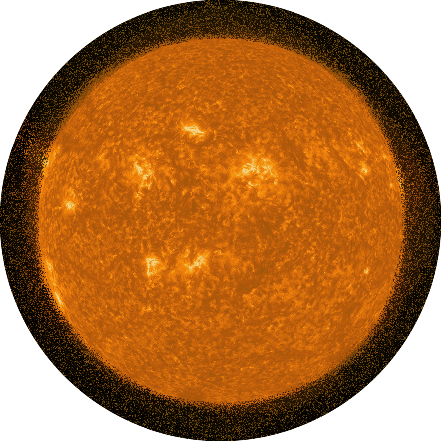

O Sol é uma estrela anã amarela, considerada o maior corpo celeste do Sistema Solar.
Sua composição é principalmente de hélio e hidrogênio, representando 98% dos gases presentes,
além de outros elementos químicos.
O tamanho do Sol é cerca de 110 vezes maior do que a Terra, com uma circunferência de 4,3 milhões
de quilômetros.
O raio equatorial do Sol é de 695.508 km, resultando em um diâmetro de 1.391.016 km.
O Sol possui aproximadamente 99,8% da massa total do Sistema Solar, sendo cerca de 333 mil vezes mais
massivo que a Terra. Sua massa é estimada em 1,98 x 10^31 kg.
